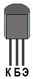

Транзистор BC557
Транзисторы BC557 кремниевые, эпитаксиально-планарные, структуры p-n-p, с высоким коэффициентом усиления и низким напряжением насыщения. Предназначены для применения в импульсных и переключающих устройствах. Транзисторы выпускаются в пластмассовом корпусе TO-92 с гибкими выводами.
Комплементарной парой для BC557 является транзистор BC547 c n-p-n структурой.

Рис. 1 - Цоколевка транзистора BC557
Таблица 1
| Параметр | Значение |
|---|---|
| Максимальное напряжение коллектор-база | 50 В |
| Максимальное напряжение эмиттер-база | 5 В |
| Максимальное напряжение коллектор-эмиттер | 45 В |
| Максимальный постоянный ток коллектора | 0,1 А |
| Статический коэффициент передачи тока (hfe): | |
| BC557A | 110 ... 220 |
| BC557B | 200 ... 450 |
| BC557C | 420 ... 800 |
| Граничная частота коэффициента передачи тока для схем с ОЭ | 150 МГц |
| Максимальная рассеиваемая мощность | 0,5 Вт |